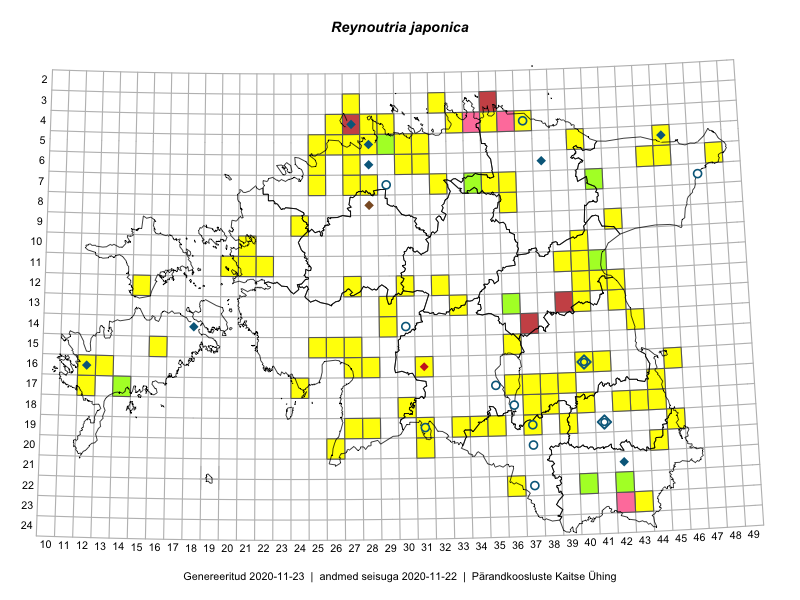

Reynoutria japonica — vooljas pargitatar
Kaardile koondatud taksonid: Reynoutria japonica Houtt. (185); Fallopia japonica (Houtt.) Ronse Decr. (1)

Kaart põhineb 186 kirjel, neist:
vaatlusi 171
eksemplare 15
Kaasaegsed1 leiukohad asuvad 99 ruudus.
Andmed “Eesti taimede levikuatlasest”,2 sulgudes ruutude arv:3
● 1971–2005 (8)
○ 1921–1970 (8)
△ kuni 1920 (0)
+ hävinud (0)
? kaheldav (0)
Lisaruudud teistest andmebaasidest:4
ELF: 2006– . . . (0)
PKÜ: 2006– . . . (2)
ELF: 1971–2005 (0)
PKÜ: 1997–2005 (1)
| Ruut | Vaatleja(d) | Vaatlusaeg | Kirje PlutoFis |
|---|---|---|---|
| 10-40 | Toomas Kukk, Raivo Kalle | 2015-05-12 | ruut/ala: Reynoutria japonica Houtt. |
| 16-41 | Peedu Saar, Eerik Leibak | 2015-07-30 | ruut/ala: Reynoutria japonica Houtt. |
| 23-43 | Ott Luuk, Peedu Saar | 2015-08-12 | ruut/ala: Reynoutria japonica Houtt. |
| 16-45 | Toomas Kukk, Eerik Leibak | 2015-07-29 | ruut/ala: Reynoutria japonica Houtt. |
| 18-40 | Malle Leht | 2015-07-25 | ruut/ala: Reynoutria japonica Houtt. |
| 19-39 | Malle Leht | 2015-07-08 | ruut/ala: Reynoutria japonica Houtt. |
| 07-41 | Tiit Hallikma, Toomas Kukk | 2015-07-23 | ruut/ala: Reynoutria japonica Houtt. |
| 06-31 | Rein Kalamees, Kersti Püssa | 2015-09-13 | ruut/ala: Reynoutria japonica Houtt. |
| 17-39 | Thea Kull, Peedu Saar | 2015-06-17 | ruut/ala: Reynoutria japonica Houtt. |
| 14-43 | Thea Kull, Eerik Leibak | 2015-07-06 | ruut/ala: Reynoutria japonica Houtt. |
| 06-45 | Thea Kull, Eerik Leibak | 2015-07-20 | ruut/ala: Reynoutria japonica Houtt. |
| 07-34 | Jana-Maria Habicht, Ester Valdvee | 2015-07-20 | ruut/ala: Reynoutria japonica Houtt. |
| 15-25 | Maret Gerz, Leena Gerz | 2015-08-08 | ruut/ala: Reynoutria japonica Houtt. |
| 17-12 | Mari Reitalu | 2015-08-25 | ruut/ala: Reynoutria japonica Houtt. |
| 16-12 | Mari Reitalu | 2015-06-16 | ruut/ala: Reynoutria japonica Houtt. |
| 17-12 | Mari Reitalu | 2015-06-26 | ruut/ala: Reynoutria japonica Houtt. |
| 18-42 | Kirsi Loide, Marje Loide | 2015-07-28 | ruut/ala: Reynoutria japonica Houtt. |
| 18-37 | Helle Mäemets, Mare Leis | 2015-06-22 | ruut/ala: Reynoutria japonica Houtt. |
| 05-25 | Mari Metsoja, Jaak-Albert Metsoja | 2015-07-30 | ruut/ala: Reynoutria japonica Houtt. |
| 06-25 | Mari Metsoja, Jaak-Albert Metsoja | 2015-07-25 | ruut/ala: Reynoutria japonica Houtt. |
| 15-16 | Karin Kikas, Elle Rajandu | 2015-07-23 | ruut/ala: Reynoutria japonica Houtt. |
| 05-29 | Peedu Saar, Sander Laherand | 2013-07-07 | ruut/ala: Reynoutria japonica Houtt. |
| 06-27 | Toomas Kukk | 2016-06-06 | ruut/ala: Reynoutria japonica Houtt. |
| 22-42 | Toomas Kukk, Tiit Hallikma, Johannes Kõdar | 2016-06-15 | ruut/ala: Reynoutria japonica Houtt. |
| 19-45 | Toomas Kukk, Tiit Hallikma | 2016-06-17 | ruut/ala: Reynoutria japonica Houtt. |
| 11-40 | Eeva-Maria Jeletsky, Tarmo Niitla | 2016-06-05 | ruut/ala: Reynoutria japonica Houtt. |
| 11-41 | Eeva-Maria Jeletsky, Tarmo Niitla | 2016-06-05 | ruut/ala: Reynoutria japonica Houtt. |
| 12-42 | Eeva-Maria Jeletsky, Tarmo Niitla | 2016-06-04 | ruut/ala: Reynoutria japonica Houtt. |
| 19-37 | Maret Gerz, Liina Oja | 2016-06-16 | ruut/ala: Reynoutria japonica Houtt. |
| 18-44 | Maret Gerz, Liina Oja | 2016-06-17 | ruut/ala: Reynoutria japonica Houtt. |
| 05-26 | Tiina Elvisto, Eerik Leibak | 2016-07-04 | ruut/ala: Reynoutria japonica Houtt. |
| 13-40 | Ulvi Selgis | 2016-07-03 | ruut/ala: Reynoutria japonica Houtt. |
| 05-30 | Sander Laherand, Eerik Leibak | 2016-07-29 | ruut/ala: Reynoutria japonica Houtt. |
| 09-42 | Ott Luuk, Eerik Leibak | 2016-08-05 | ruut/ala: Reynoutria japonica Houtt. |
| 04-37 | Thea Kull, Eerik Leibak, Susanna Vain | 2016-07-26 | ruut/ala: Reynoutria japonica Houtt. |
| 17-14 | Toomas Kukk, Meeli Mesipuu, Johannes Kõdar | 2016-08-11 | ruut/ala: Reynoutria japonica Houtt. |
| 05-29 | Toomas Kukk, Sander Laherand | 2016-08-29 | ruut/ala: Reynoutria japonica Houtt. |
| 06-30 | Toomas Kukk, Sander Laherand | 2016-08-30 | ruut/ala: Reynoutria japonica Houtt. |
| 04-28 | Sander Laherand, Tõnu Ploompuu, Nele Jõessar | 2016-07-25 | ruut/ala: Reynoutria japonica Houtt. |
| 19-35 | Sirje Azarov, Peedu Saar | 2016-07-19 | ruut/ala: Reynoutria japonica Houtt. |
| 07-35 | Toomas Kukk, Sander Laherand, Nele Jõessar | 2016-07-27 | ruut/ala: Reynoutria japonica Houtt. |
| 04-29 | Sander Laherand, Tõnu Ploompuu, Nele Jõessar | 2016-07-25 | ruut/ala: Reynoutria japonica Houtt. |
| 07-32 | Peedu Saar, Ott Luuk | 2016-09-28 | ruut/ala: Reynoutria japonica Houtt. |
| 17-44 | Peedu Saar | 2016-08-24 | ruut/ala: Reynoutria japonica Houtt. |
| 04-35 | Tõnu Ploompuu | 2016-07-16 | ruut/ala: Reynoutria japonica Houtt. |
| 16-13 | Toomas Kukk, Meeli Mesipuu | 2016-10-05 | ruut/ala: Reynoutria japonica Houtt. |
| 05-26 | Kadi-Liis Kesler | 2015-05-31 | ruut/ala: Reynoutria japonica Houtt. |
| 13-33 | Ott Luuk, Indrek Tammekänd | 2016-07-21 | ruut/ala: Reynoutria japonica Houtt. |
| 15-26 | Kadi-Liis Kesler, Tiina Elvisto | 2015-07-28 | ruut/ala: Reynoutria japonica Houtt. |
| 15-27 | Kadi-Liis Kesler, Tiina Elvisto | 2015-07-28 | ruut/ala: Reynoutria japonica Houtt. |
| 05-29 | Kadi-Liis Kesler, Tiina Elvisto | 2015-05-12 | ruut/ala: Reynoutria japonica Houtt. |
| 06-30 | Kadi-Liis Kesler, Tiina Elvisto | 2015-05-26 | ruut/ala: Reynoutria japonica Houtt. |
| 04-29 | Kadi-Liis Kesler, Tiina Elvisto | 2015-08-12 | ruut/ala: Reynoutria japonica Houtt. |
| 09-24 | Jaak-Albert Metsoja, Mari Metsoja | 2016-07-08 | ruut/ala: Reynoutria japonica Houtt. |
| 12-27 | Jaak-Albert Metsoja, Mari Metsoja | 2016-07-05 | ruut/ala: Reynoutria japonica Houtt. |
| 20-44 | Herdis Fridolin | 2015-08-04 | ruut/ala: Reynoutria japonica Houtt. |
| 17-38 | Ott Luuk | 2017-06-11 | ruut/ala: Reynoutria japonica Houtt. |
| 22-36 | Ott Luuk, Peedu Saar | 2017-07-28 | ruut/ala: Reynoutria japonica Houtt. |
| 07-25 | Mari Reitalu, Indrek Tammekänd | 2017-08-10 | ruut/ala: Reynoutria japonica Houtt. |
| 07-27 | Peedu Saar, Timo Luhamäe | 2017-08-08 | ruut/ala: Reynoutria japonica Houtt. |
| 06-27 | Toomas Kukk | 2015-06-19 | punkt: Reynoutria japonica Houtt. |
| 17-39 | Peedu Saar, Thea Kull | 2015-06-17 | punkt: Reynoutria japonica Houtt. |
| 16-41 | Peedu Saar, Eerik Leibak | 2015-07-30 | punkt: Reynoutria japonica Houtt. |
| 23-43 | Ott Luuk, Peedu Saar | 2015-08-12 | punkt: Reynoutria japonica Houtt. |
| 16-45 | Toomas Kukk, Eerik Leibak | 2015-07-29 | punkt: Reynoutria japonica Houtt. |
| 06-31 | Rein Kalamees, Kersti Püssa | 2015-09-13 | punkt: Reynoutria japonica Houtt. |
| 06-48 | Ott Luuk, Hannes Pehlak | 2015-07-21 | punkt: Reynoutria japonica Houtt. |
| 14-43 | Thea Kull, Eerik Leibak | 2015-07-06 | punkt: Reynoutria japonica Houtt. |
| 13-42 | Thea Kull, Meeli Mesipuu | 2015-08-14 | punkt: Reynoutria japonica Houtt. |
| 11-39 | Ulvi Selgis | 2015-09-23 | punkt: Reynoutria japonica Houtt. |
| 11-40 | Ulvi Selgis | 2015-09-23 | punkt: Reynoutria japonica Houtt. |
| 15-25 | Maret Gerz, Leena Gerz | 2015-08-08 | punkt: Reynoutria japonica Houtt. |
| 18-30 | Ulvi Selgis | 2015-08-30 | punkt: Reynoutria japonica Houtt. |
| 17-12 | Mari Reitalu | 2015-06-26 | punkt: Reynoutria japonica Houtt. |
| 14-29 | Liina Oja, Ott Luuk | 2015-05-10 | punkt: Reynoutria japonica Houtt. |
| 19-39 | Karin Kikas, Elle Rajandu | 2015-05-15 | punkt: Reynoutria japonica Houtt. |
| 18-37 | Helle Mäemets, Mare Leis | 2015-06-22 | punkt: Reynoutria japonica Houtt. |
| 20-31 | Ott Luuk, Indrek Tammekänd | 2015-05-22 | punkt: Reynoutria japonica Houtt. |
| 16-31 | Toomas Kukk, Eerik Leibak | 2016-04-28 | punkt: Reynoutria japonica Houtt. |
| 18-37 | Helle Mäemets, Mare Leis | 2015-06-22 | punkt: Reynoutria japonica Houtt. |
| 18-37 | Helle Mäemets | 2015-07-12 | punkt: Reynoutria japonica Houtt. |
| 17-36 | Tiit Hallikma, Ott Luuk | 2016-04-25 | punkt: Reynoutria japonica Houtt. |
| 17-36 | Tiit Hallikma, Ott Luuk | 2016-04-25 | punkt: Reynoutria japonica Houtt. |
| 19-37 | Tiit Hallikma, Ott Luuk | 2016-04-25 | punkt: Reynoutria japonica Houtt. |
| 05-40 | Tiit Hallikma, Ott Luuk | 2016-05-20 | punkt: Reynoutria japonica Houtt. |
| 06-27 | Toomas Kukk | 2016-06-06 | punkt: Reynoutria japonica Houtt. |
| 11-40 | Eeva-Maria Jeletsky, Tarmo Niitla | 2016-06-05 | punkt: Reynoutria japonica Houtt. |
| 11-41 | Eeva-Maria Jeletsky, Tarmo Niitla | 2016-06-05 | punkt: Reynoutria japonica Houtt. |
| 12-42 | Eeva-Maria Jeletsky, Tarmo Niitla | 2016-06-04 | punkt: Reynoutria japonica Houtt. |
| 19-34 | Silvia Pihu, Illi Tarmu | 2015-07-11 | punkt: Reynoutria japonica Houtt. |
| 19-34 | Silvia Pihu, Illi Tarmu | 2015-07-11 | punkt: Reynoutria japonica Houtt. |
| 19-28 | Peedu Saar, Ott Luuk | 2016-06-09 | punkt: Reynoutria japonica Houtt. |
| 19-37 | Liina Oja, Maret Gerz | 2016-06-17 | punkt: Reynoutria japonica Houtt. |
| 18-44 | Maret Gerz, Liina Oja | 2016-06-17 | punkt: Reynoutria japonica Houtt. |
| 18-43 | Maret Gerz, Liina Oja | 2016-06-17 | punkt: Reynoutria japonica Houtt. |
| 15-36 | Helle Mäemets, Mare Leis, Jaak-Albert Metsoja | 2015-07-05 | punkt: Reynoutria japonica Houtt. |
| 05-26 | Tiina Elvisto, Eerik Leibak | 2016-07-04 | punkt: Reynoutria japonica Houtt. |
| 07-35 | Sander Laherand, Toomas Kukk, Nele Jõessar | 2016-07-27 | punkt: Reynoutria japonica Houtt. |
| 17-37 | Rein Kalamees, Kersti Püssa | 2016-07-20 | punkt: Reynoutria japonica Houtt. |
| 17-36 | Rein Kalamees, Kersti Püssa | 2016-07-20 | punkt: Reynoutria japonica Houtt. |
| 11-21 | Maret Gerz, Aat Sarv | 2016-07-07 | punkt: Reynoutria japonica Houtt. |
| 05-30 | Sander Laherand, Eerik Leibak | 2016-07-29 | punkt: Reynoutria japonica Houtt. |
| 12-32 | Susanna Vain, Thea Kull, Raivo Kalle | 2016-07-21 | punkt: Reynoutria japonica Houtt. |
| 04-28 | Sander Laherand, Tõnu Ploompuu, Nele Jõessar | 2016-07-25 | punkt: Reynoutria japonica Houtt. |
| 04-37 | Susanna Vain, Eerik Leibak, Thea Kull | 2016-07-26 | punkt: Reynoutria japonica Houtt. |
| 19-33 | Liina Oja, Elle Rajandu | 2016-07-18 | punkt: Reynoutria japonica Houtt. |
| 05-31 | Toomas Kukk, Sander Laherand | 2016-08-30 | punkt: Reynoutria japonica Houtt. |
| 06-30 | Sander Laherand, Toomas Kukk | 2016-08-30 | punkt: Reynoutria japonica Houtt. |
| 19-45 | Tiit Hallikma, Toomas Kukk | 2016-06-17 | punkt: Reynoutria japonica Houtt. |
| 17-44 | Peedu Saar | 2016-08-24 | punkt: Reynoutria japonica Houtt. |
| 04-35 | Tõnu Ploompuu | 2016-07-16 | punkt: Reynoutria japonica Houtt. |
| 04-35 | Tõnu Ploompuu | 2016-07-16 | punkt: Reynoutria japonica Houtt. |
| 07-32 | Ott Luuk, Peedu Saar | 2016-09-28 | punkt: Reynoutria japonica Houtt. |
| 05-29 | Sander Laherand, Toomas Kukk | 2016-09-29 | punkt: Reynoutria japonica Houtt. |
| 04-28 | Sander Laherand, Tõnu Ploompuu, Nele Jõessar | 2016-07-25 | punkt: Reynoutria japonica Houtt. |
| 04-29 | Sander Laherand, Tõnu Ploompuu, Nele Jõessar | 2016-07-25 | punkt: Reynoutria japonica Houtt. |
| 04-29 | Sander Laherand, Tõnu Ploompuu, Nele Jõessar | 2016-07-25 | punkt: Reynoutria japonica Houtt. |
| 20-31 | Peedu Saar, Ott Luuk | 2016-10-06 | punkt: Reynoutria japonica Houtt. |
| 19-35 | Peedu Saar, Sirje Azarov | 2016-07-19 | punkt: Reynoutria japonica Houtt. |
| 04-29 | Sander Laherand, Nele Jõessar, Tõnu Ploompuu | 2016-07-25 | punkt: Reynoutria japonica Houtt. |
| 18-38 | Ott Luuk, Thea Kull | 2016-08-23 | punkt: Reynoutria japonica Houtt. |
| 05-28 | Kadi-Liis Kesler, Tiina Elvisto | 2015-05-12 | ruut/ala: Reynoutria japonica Houtt. |
| 22-42 | Tiit Hallikma, Toomas Kukk, Johannes Kõdar | 2016-06-15 | punkt: Reynoutria japonica Houtt. |
| 17-14 | Meeli Mesipuu, Toomas Kukk, Johannes Kõdar | 2016-08-11 | punkt: Reynoutria japonica Houtt. |
| 16-13 | Meeli Mesipuu, Toomas Kukk | 2016-10-05 | punkt: Reynoutria japonica Houtt. |
| 09-42 | Ott Luuk, Eerik Leibak | 2016-08-05 | punkt: Reynoutria japonica Houtt. |
| 12-27 | Jaak-Albert Metsoja, Mari Metsoja | 2016-07-05 | punkt: Reynoutria japonica Houtt. |
| 16-27 | Indrek Tammekänd | 2015-05-13 | punkt: Reynoutria japonica Houtt. |
| 16-27 | Indrek Tammekänd | 2016-07-06 | punkt: Reynoutria japonica Houtt. |
| 16-27 | Indrek Tammekänd | 2016-07-06 | punkt: Reynoutria japonica Houtt. |
| 20-26 | Indrek Tammekänd, Janno Tammekänd | 2016-09-18 | punkt: Reynoutria japonica Houtt. |
| 05-29 | Kadi-Liis Kesler | 2015-05-12 | punkt: Reynoutria japonica Houtt. |
| 11-22 | Tõnu Ploompuu | 2015-08-21 | punkt: Reynoutria japonica Houtt. |
| 05-28 | Kadi-Liis Kesler | 2015-05-28 | punkt: Reynoutria japonica Houtt. |
| 05-28 | Kadi-Liis Kesler | 2015-05-28 | punkt: Reynoutria japonica Houtt. |
| 05-28 | Kadi-Liis Kesler | 2015-05-28 | punkt: Reynoutria japonica Houtt. |
| 05-28 | Kadi-Liis Kesler | 2015-06-05 | punkt: Reynoutria japonica Houtt. |
| 15-26 | Indrek Tammekänd | 2016-07-08 | punkt: Reynoutria japonica Houtt. |
| 05-26 | Kadi-Liis Kesler | 2015-05-31 | punkt: Reynoutria japonica Houtt. |
| 15-27 | Kadi-Liis Kesler, Tiina Elvisto | 2015-07-28 | punkt: Reynoutria japonica Houtt. |
| 15-26 | Kadi-Liis Kesler, Tiina Elvisto | 2015-07-28 | punkt: Reynoutria japonica Houtt. |
| 04-29 | Kadi-Liis Kesler, Tiina Elvisto | 2015-08-12 | punkt: Reynoutria japonica Houtt. |
| 12-41 | Ott Luuk, Peedu Saar | 2017-05-18 | punkt: Reynoutria japonica Houtt. |
| 13-29 | Ott Luuk | 2017-05-28 | punkt: Reynoutria japonica Houtt. |
| 17-38 | Ott Luuk | 2017-06-11 | punkt: Reynoutria japonica Houtt. |
| 07-27 | Timo Luhamäe, Peedu Saar | 2017-08-08 | punkt: Reynoutria japonica Houtt. |
| 12-41 | Ott Luuk, Peedu Saar | 2017-08-23 | punkt: Reynoutria japonica Houtt. |
| 17-24 | Heikki Luhamaa | 2017-09-11 | punkt: Reynoutria japonica Houtt. |
| 11-20 | Ott Luuk, Ilmar Uibopuu | 2017-08-10 | punkt: Reynoutria japonica Houtt. |
| 22-36 | Peedu Saar, Ott Luuk | 2017-07-28 | punkt: Reynoutria japonica Houtt. |
| 03-27 | Ott Luuk | 2017-07-20 | punkt: Reynoutria japonica Houtt. |
| 04-26 | Ott Luuk | 2017-07-20 | punkt: Reynoutria japonica Houtt. |
| 16-40 | Toomas Kukk | 2018-06-16 | ruut/ala: Reynoutria japonica Houtt. |
| 07-28 | Mari Reitalu | 2018-06-30 | punkt: Reynoutria japonica Houtt. |
| 06-27 | Rein Kalamees | 2018-07-06 | punkt: Reynoutria japonica Houtt. |
| 04-33 | Peedu Saar, Toomas Kukk | 2018-08-08 | ruut/ala: Reynoutria japonica Houtt. |
| 06-44 | Peedu Saar, Toomas Kukk | 2018-09-04 | punkt: Reynoutria japonica Houtt. |
| 05-45 | Peedu Saar, Toomas Kukk | 2018-09-04 | punkt: Reynoutria japonica Houtt. |
| 19-31 | Peedu Saar | 2018-08-03 | punkt: Reynoutria japonica Houtt. |
| 16-13 | Mari Reitalu | 2019-08-15 | punkt: Reynoutria japonica Houtt. |
| 05-29 | Thea Kull | 2019-06-12 | ruut/ala: Reynoutria japonica Houtt. |
| 05-28 | Thea Kull | 2019-06-13 | punkt: Reynoutria japonica Houtt. |
| 10-21 | Ott Luuk | 2019-09-19 | punkt: Reynoutria japonica Houtt. |
| 15-27 | Peedu Saar, Toomas Kukk | 2019-08-29 | punkt: Reynoutria japonica Houtt. |
| 12-40 | Peedu Saar | 2019-07-30 | ruut/ala: Reynoutria japonica Houtt. |
| 08-36 | Ott Luuk, Jaak-Albert Metsoja | 2019-08-05 | punkt: Reynoutria japonica Houtt. |
| 07-36 | Ott Luuk, Jaak-Albert Metsoja | 2019-08-05 | punkt: Reynoutria japonica Houtt. |
| 03-32 | Ott Luuk, Jaak-Albert Metsoja | 2019-08-07 | punkt: Reynoutria japonica Houtt. |
| 05-27 | Ranno Puumets | 2018-06-06 | punkt: Reynoutria japonica Houtt. |
| 07-25 | Mari Reitalu, Indrek Tammekänd | 2017-08-10 | punkt: Reynoutria japonica Houtt. |
| 12-30 | Meeli Mesipuu, Indrek Tammekänd | 2017-08-09 | punkt: Reynoutria japonica Houtt. |
| 07-34 | Jana-Maria Habicht | 2015-07-20 | TAM0117033: Reynoutria japonica Houtt. |
| 07-34 | Jana-Maria Habicht | 2015-07-20 | TAM0117034: Reynoutria japonica Houtt. |
| 22-42 | Ott Luuk | 2012-09-14 | TAA0116687: Reynoutria japonica Houtt. |
| 17-14 | Raivo Kalle | 2016-08-02 | TAA0133320: Reynoutria japonica Houtt. |
| 13-36 | Raivo Kalle | 2016-09-19 | TAA0133346: Reynoutria japonica Houtt. |
| 07-41 | Toomas Kukk, Tiit Hallikma | 2015-07-23 | TAA0135100: Reynoutria japonica Houtt. |
| 22-40 | Toomas Kukk, Tiit Hallikma | 2016-06-15 | TAA0136007: Reynoutria japonica Houtt. |
| 05-29 | Toomas Kukk | 2014-08-15 | TAA0113306: Reynoutria japonica Houtt. |
| 05-29 | Toomas Kukk | 2014-08-15 | TAA0113307: Reynoutria japonica Houtt. |
| 11-41 | Toomas Kukk, Ilmar Uibopuu | 2017-10-14 | TAA0141976: Reynoutria japonica Houtt. |
| 11-41 | Toomas Kukk, Ilmar Uibopuu | 2017-10-14 | TAA0141977: Reynoutria japonica Houtt. |
| 11-41 | Toomas Kukk, Ilmar Uibopuu | 2017-10-14 | TAA0141978: Reynoutria japonica Houtt. |
| 11-41 | Toomas Kukk, Ilmar Uibopuu | 2017-10-14 | TAA0141979: Reynoutria japonica Houtt. |
| 11-41 | Toomas Kukk, Ilmar Uibopuu | 2017-10-14 | TAA0141979.dupl: Reynoutria japonica Houtt. |
| 15-37 | Lauri Mällo | 2019-05-24 | JPGH19052: Fallopia japonica (Houtt.) Ronse Decr. |
Kaasaegsed leiukohad (tähistatud värvitud ruutudega) põhinevad peamiselt 2014–2019 välitööandmetel. Väiksemal määral on andmebaasi kantud vanemaid leiuandmeid aastatest 2006–2013.↩︎
Kukk, T., Kull, T., Eesti taimede levikuatlas. Eesti Maaülikool, Põllumajandus- ja Keskkonnainstituut, Tartu, 2005.↩︎
NB! 2005. aasta atlase andmestikus katavad uuemad leiud vanemaid. Näiteks kui liik on ruudus registreeritud 1971–2005, siis pole võimalik öelda, kas ta oli sellest ruudust teada ka enne 1970. aastat. Vana atlase andmetel hävinud ja kaheldavaid leiukohti pole hilisemate (taas)leidude põhjal korrigeeritud.↩︎
Eestimaa Looduse Fondi (ELF) ja Pärandkoosluste Kaitse Ühingu (PKÜ) andmebaasid sisaldavad inventeeritud koosluste kirjeldusi ja liigiloendeid. Neist andmekogudest on kaardile lisatud lisatud vaid need ruudud, millest uue atlase andmekogus taksoni kohta kirjeid veel pole. Kõrvale on jäetud teadaolevalt kaheldavad määrangud. Kaartidel katavad uuema perioodi andmed vanemaid, PKÜ omad ELFi omi. Kattumise tõttu võib kaardil näha olla vähem mingi kategooria ruute kui legendis olev arv näitab. ELFi ja PKÜ andmed ei kajastu hetkel vaatluste tabelis ega ruutude liigiloendites.↩︎